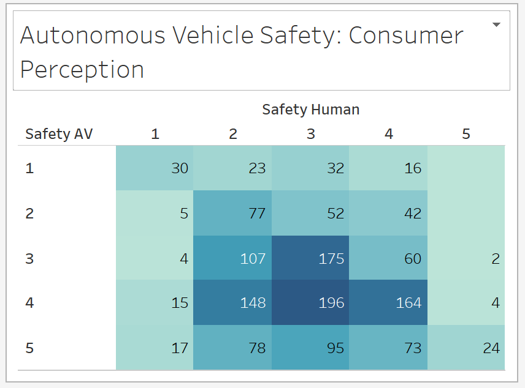

Page for Security Experts
For security experts, the main issue they care about is the security condition about AV. They want to know how the general public think about AV so that they could address more focused questions in the future development and modification of AV.
The chart above shows some results from a survey done by Bile Pittsburgh on March 2017 in Pittsburgh, presenting how residents feel about sharing the road with AVs as a bicyclist and/or as a pedestrian.
This particular chart show general public's response towards the question "On a typical day, how safe do you feel sharing the road with human-drive cars/ with Autonomous Vehicles?" . 1 represents "very unsafe" and 5 represents "very safe".
We choose to overlap 2 different results together in one single charts to show how many people answered one certain number for human safety but another certain number for AV safety. In this way, it shows more information to better understanding the future trend of AV development as well as its inner relationship with human-drive cars.